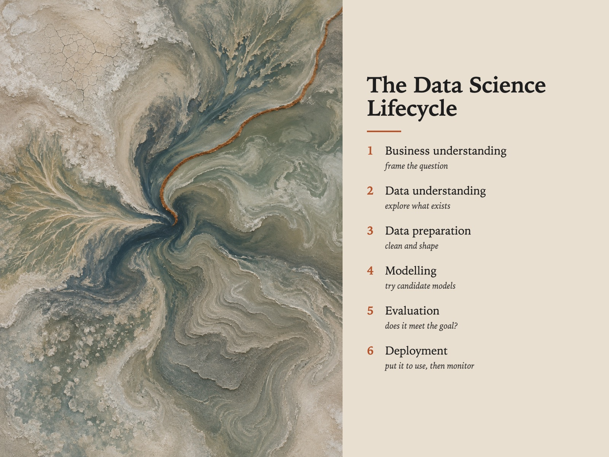

Style Vault / Gallery / Shoreline Abstract
Shoreline Abstract
SV-042

Example: The data science lifecycle, set in Shoreline Abstract
In plain words
An aerial view looking straight down at the place where water meets land, so high up that you cannot tell how big anything is. Two or three soft muted colour fields are crossed by one thin hard line, and there is no horizon or sky. The style is the doubt over whether you are looking at a painting or a real place. Best for: boundaries in data governance; slow change and drift; reflective personal-brand posts; climate and sustainability data. Avoid: text or lettering generated inside the image.
Topics it fits
- Boundaries in data governancethe single hard line crossing soft fields is a picture of where one domain's ownership ends
- Slow change and driftterrain that has been shifting unwatched is a quiet metaphor for model or data drift
- Reflective personal-brand poststhe unpeopled, ambiguous view gives room for a story about transition without spelling it out
- Climate and sustainability datathe top-down mineral colours show real ground while keeping the image calm and abstract
Art style and layout
- core locked [top_down_only, no_horizon, soft_fields_one_hard_line, mineral_not_digital, scale_unreadable]
- the tension you cannot tell whether you are looking at paint or at a place. That ambiguity is the entire card and it is what keeps this out of the SV-018 Striped Everything failure class. A pure abstract is a surface and has nothing left after one frame; this has a subject hiding inside it, and ten terrains give ten genuinely different answers
- top down only the moment a horizon appears it becomes a landscape print and joins the 40,000 botanical/landscape listings instead of the 90,000 abstract ones. Say
no horizon, no skyexplicitly - MJ tilts the camera by reflex - soft fields one hard line SIGNATURE. Everything is soft-edged and wet-boundaried except one crisp line - a salt crust, a dredged channel, a road on a levee. Without it the frame is mush; with two of them it becomes a map
- scale unreadable no boats, no buildings, no vehicles, no figures. Any scale cue collapses the ambiguity and it stops being abstract
- palette [silt "#7C8574, salt bone "#E4DDCE, rust ochre "#A8683A, tidal blue-black "#1F2A2E]
- mineral not digital ask for
sediment grain,salt bloom,dried mud crazing,matte pigment. MJ's default for an aerial is a clean satellite render with smooth gradients, which is dead on arrival for print - negative space one field should be genuinely empty for a third of the frame. The emptiness is what makes it hang on a wall rather than demand to be read
- era reference aerial survey photography, land art documentation, mid-century colour-field painting. Do not name a living artist - Leslie Wayne gave the direction and stays out of every prompt
What must stay, what may change
subject - ten far-apart terrains seen from directly above (salt flat, glacier snout, river delta, tailings pond, oyster beds, lava field, dried lakebed, sea ice, mangrove, sand bar). NOT ten deltas. The season axis is the strongest untried second pass on this card
As JSON
Paste this into a prompt or a skill to reuse the style.
{
"id": "SV-042",
"name": "Shoreline Abstract",
"audience": [
"gallery"
],
"category": [
"photography"
],
"format": [
"illustration",
"poster"
],
"maker": "diffusion",
"keep_and_swap": "**subject - ten far-apart terrains seen from directly above** (salt flat, glacier snout, river delta, tailings pond, oyster beds, lava field, dried lakebed, sea ice, mangrove, sand bar). NOT ten deltas. The season axis is the strongest untried second pass on this card",
"style_dna": {
"core_locked": "[top_down_only, no_horizon, soft_fields_one_hard_line, mineral_not_digital, scale_unreadable]",
"the_tension": "you cannot tell whether you are looking at **paint or at a place.** That ambiguity is the entire card and it is what keeps this out of the SV-018 Striped Everything failure class. A pure abstract is a surface and has nothing left after one frame; this has a subject hiding inside it, and ten terrains give ten genuinely different answers",
"top_down_only": "the moment a horizon appears it becomes a landscape print and joins the 40,000 botanical/landscape listings instead of the 90,000 abstract ones. Say `no horizon, no sky` explicitly - MJ tilts the camera by reflex",
"soft_fields_one_hard_line": "SIGNATURE. Everything is soft-edged and wet-boundaried except one crisp line - a salt crust, a dredged channel, a road on a levee. Without it the frame is mush; with two of them it becomes a map",
"scale_unreadable": "no boats, no buildings, no vehicles, no figures. Any scale cue collapses the ambiguity and it stops being abstract",
"palette": "[silt \"#7C8574, salt bone \"#E4DDCE, rust ochre \"#A8683A, tidal blue-black \"#1F2A2E]",
"mineral_not_digital": "ask for `sediment grain`, `salt bloom`, `dried mud crazing`, `matte pigment`. MJ's default for an aerial is a clean satellite render with smooth gradients, which is dead on arrival for print",
"negative_space": "one field should be genuinely empty for a third of the frame. The emptiness is what makes it hang on a wall rather than demand to be read",
"era_reference": "aerial survey photography, land art documentation, mid-century colour-field painting. **Do not name a living artist** - Leslie Wayne gave the direction and stays out of every prompt"
},
"elements": {
"subject": "one stretch of ground where water meets land, seen from straight above and from high enough that scale is unreadable. The subject is the **boundary**, not the terrain either side of it",
"composition": "no horizon, no sky, no anchor. Two or three large soft-edged fields dividing the frame asymmetrically, plus exactly one thin hard line crossing them. Frame edges cut arbitrarily, as a survey photograph does",
"light": "flat even overcast, no cast shadows, no time of day. Light is deliberately uninteresting so the colour boundary does all the work",
"palette": "muted and oxidised - silt grey-green, salt bone, rust ochre, deep tidal blue-black. Two dominant fields plus one accent that appears only in the hard line. **No saturated hue, no gradient sky colours**",
"material/texture": "mineral. Sediment grain, salt bloom, dried-mud crazing, the tooth of pigment sitting on a surface. It must read as **something physically settled**, not as digital airbrush",
"mood": "quiet, unpeopled, slightly ominous. A place that has been changing for a long time without anyone watching",
"camera/render": "top-down aerial or satellite survey photograph, orthographic, no perspective convergence, no lens character"
},
"palette_hex": [
"#7c8574",
"#e4ddce",
"#a8683a",
"#1f2a2e"
],
"topics": [
{
"topic": "Boundaries in data governance",
"why": "the single hard line crossing soft fields is a picture of where one domain's ownership ends"
},
{
"topic": "Slow change and drift",
"why": "terrain that has been shifting unwatched is a quiet metaphor for model or data drift"
},
{
"topic": "Reflective personal-brand posts",
"why": "the unpeopled, ambiguous view gives room for a story about transition without spelling it out"
},
{
"topic": "Climate and sustainability data",
"why": "the top-down mineral colours show real ground while keeping the image calm and abstract"
}
]
}